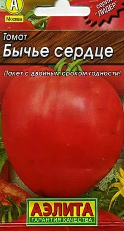

(нажмите для увеличения)
Легендарный крупноплодный сорт с мясистыми плодами сердцевидной формы.
Томат "Бычье сердце" — один из самых любимых сортов огородников. Плоды крупные, мясистые, с сахаристой мякотью и отличным сладким вкусом. Идеально подходит для приготовления свежих салатов, томатного сока и пасты. Рекомендуется выращивание в теплице для получения максимального урожая. Куст требует подвязки и пасынкования.